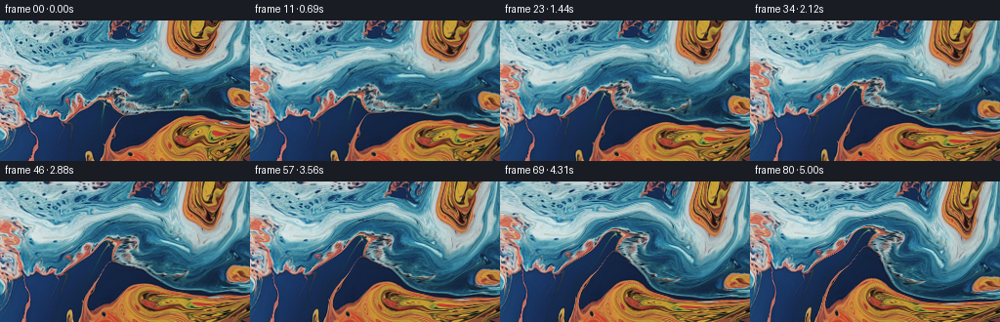
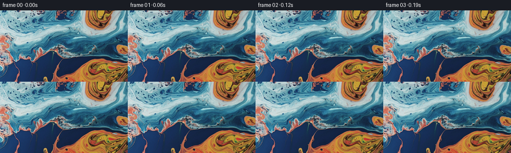

候选 01 · 2026-11-08T22:58:17.503403+00:00 · 点开播放与检查图
inspection.png

transition_check.png

代码变化
--- 上一保存版本
+++ 本次保存版本
@@ -0,0 +1,149 @@
+"""Animate the supplied macro-liquid photograph with a smooth incompressible flow.
+
+Everything is constructed from the first RGB frame and analytic, divergence-free
+velocity fields. A high-resolution backward material map avoids the texture blur
+that would result from repeatedly transporting the RGB image itself.
+"""
+from pathlib import Path
+import json
+import numpy as np
+from PIL import Image
+import artifact_io
+
+ROOT = Path(__file__).resolve().parent
+
+
+def bilinear(a, x, y):
+ h, w = a.shape[:2]
+ x = np.clip(x, 0, w - 1.00001)
+ y = np.clip(y, 0, h - 1.00001)
+ ix, iy = x.astype(np.int32), y.astype(np.int32)
+ fx, fy = x - ix, y - iy
+ if a.ndim == 3:
+ fx, fy = fx[..., None], fy[..., None]
+ return ((a[iy, ix] * (1-fx) + a[iy, ix+1] * fx) * (1-fy)
+ + (a[iy+1, ix] * (1-fx) + a[iy+1, ix+1] * fx) * fy)
+
+
+def cubic_weights(t):
+ return (-0.5*t + t*t - 0.5*t*t*t,
+ 1 - 2.5*t*t + 1.5*t*t*t,
+ 0.5*t + 2*t*t - 1.5*t*t*t,
+ -0.5*t*t + 0.5*t*t*t)
+
+
+def sample_rgb(a, x, y):
+ h, w = a.shape[:2]
+ x = np.clip(x, 0, w-1)
+ y = np.clip(y, 0, h-1)
+ ix, iy = np.floor(x).astype(np.int32), np.floor(y).astype(np.int32)
+ wx, wy = cubic_weights(x-ix), cubic_weights(y-iy)
+ result = np.zeros((*x.shape, 3), np.float64)
+ for j in range(4):
+ row = np.zeros_like(result)
+ for i in range(4):
+ row += a[np.clip(iy+j-1, 0, h-1), np.clip(ix+i-1, 0, w-1)] * wx[i][..., None]
+ result += row * wy[j][..., None]
+ return result
+
+
+def velocity(x, y, t, w, h):
+ # psi = boundary_envelope * interior_streamfunction. Its perpendicular
+ # gradient conserves area, and normal velocity is zero at every boundary.
+ kx, ky = np.pi/(w-1), np.pi/(h-1)
+ sx, sy = np.sin(kx*x), np.sin(ky*y)
+ cx, cy = np.cos(kx*x), np.cos(ky*y)
+ b = sx*sy
+ bx, by = kx*cx*sy, ky*sx*cy
+ p = np.full_like(x, 380.0 * (1 + .08*np.sin(.53*t)))
+ px, py = np.zeros_like(x), np.zeros_like(y)
+ # Interacting broad eddies: the orange pools elongate and curl rather than
+ # translating rigidly. The eddy centers migrate gradually with the current.
+ eddies = [
+ (165 + 4*np.sin(.42*t), 83 + 3*np.sin(.38*t), 43., 33., 235.),
+ (77 + 4*np.sin(.39*t), 56 + 3*np.sin(.45*t), 36., 28., -155.),
+ (205 - 3*np.sin(.37*t), 32 + 3*np.sin(.43*t), 25., 23., -100.),
+ (199 - 4*np.sin(.35*t), 115 - 3*np.sin(.48*t), 28., 25., 90.),
+ (58 + 3*np.sin(.41*t), 110 - 2*np.sin(.49*t), 25., 25., -80.),
+ ]
+ for j, (xc, yc, rx, ry, strength) in enumerate(eddies):
+ dx, dy = x-xc, y-yc
+ g = strength * (1 + .1*np.sin(.47*t + j*.8)) * np.exp(-.5*((dx/rx)**2+(dy/ry)**2))
+ p += g
+ px -= g*dx/rx**2
+ py -= g*dy/ry**2
+ # Low-amplitude, shorter capillary eddies prevent uniform solid rotation.
+ for amp, a, c, phase, rate in [
+ (12., .083, .062, .7, -.54),
+ (8., -.113, .078, 2.0, .66),
+ (4.5, .173, .135, 1.1, -.79),
+ ]:
+ z = a*x+c*y+phase+rate*t
+ p += amp*np.sin(z)
+ px += amp*a*np.cos(z)
+ py += amp*c*np.cos(z)
+ return by*p+b*py, -(bx*p+b*px)
+
+
+def generate():
+ spec = json.loads((ROOT/'task_spec.json').read_text())
+ n, h, w, fps = spec['frames'], spec['height'], spec['width'], spec['fps']
+ src_u8 = np.asarray(Image.open(ROOT/'first_frame.png').convert('RGB'))
+ assert src_u8.shape == (h, w, 3)
+ src = src_u8.astype(np.float64)
+ # Two samples per source pixel for transporting the material coordinates.
+ scale = 2
+ gh, gw = scale*(h-1)+1, scale*(w-1)+1
+ yy, xx = np.mgrid[0:gh, 0:gw].astype(np.float64)/scale
+ coords = np.stack([xx, yy], axis=-1)
+ y, x = np.mgrid[0:h, 0:w].astype(np.float64)
+ env = np.sin(np.pi*x/(w-1))*np.sin(np.pi*y/(h-1))
+ phase1 = .105*x+.077*y
+ phase2 = -.069*x+.131*y+1.3
+ frames = np.empty((n, h, w, 3), dtype=np.uint8)
+ frames[0] = src_u8
+ substeps = 3
+ dt = 1/(fps*substeps)
+ for frame in range(1, n):
+ for sub in range(substeps):
+ tend = ((frame-1)*substeps+sub+1)*dt
+ # Midpoint backward trace through the evolving stream field.
+ u, v = velocity(xx, yy, tend, w, h)
+ mx, my = xx-.5*dt*u, yy-.5*dt*v
+ um, vm = velocity(mx, my, tend-.5*dt, w, h)
+ qx, qy = xx-dt*um, yy-dt*vm
+ coords = bilinear(coords, qx*scale, qy*scale)
+ t = frame/fps
+ # Subpixel travelling surface ripples; exactly zero at t=0.
+ rx = env*(.48*(np.sin(phase1-1.40*t)-np.sin(phase1))
+ +.20*(np.sin(phase2+1.05*t)-np.sin(phase2)))
+ ry = env*(.34*(np.sin(phase2+1.05*t)-np.sin(phase2))
+ -.17*(np.sin(phase1-1.40*t)-np.sin(phase1)))
+ uv = bilinear(coords, (x+rx)*scale, (y+ry)*scale)
+ rgb = sample_rgb(src, uv[..., 0], uv[..., 1])
+ # Gentle coherent changes to surface reflection, not independent noise.
+ lum = rgb.mean(axis=-1)
+ reflective = np.clip((lum-65)/140, 0, 1)
+ light = (.014*(np.sin(.046*x+.059*y-.85*t)-np.sin(.046*x+.059*y))
+ + .006*(np.sin(.14*x-.11*y+1.2*t)-np.sin(.14*x-.11*y)))
+ rgb *= (1 + light*(.30+.70*reflective))[..., None]
+ frames[frame] = np.clip(np.rint(rgb), 0, 255).astype(np.uint8)
+ if frame % 20 == 0:
+ print(f'Generated {frame+1}/{n} frames', flush=True)
+ assert np.array_equal(frames[0], src_u8)
+ artifact_io.save(frames, ROOT)
+ delta = np.abs(frames[1:].astype(np.float32)-frames[:-1].astype(np.float32))
+ report = {
+ 'shape': list(frames.shape),
+ 'dtype': str(frames.dtype),
+ 'first_frame_exact': bool(np.array_equal(frames[0], src_u8)),
+ 'mean_frame_change': float(delta.mean()),
+ 'mean_frame_change_range': [float(delta.mean((1,2,3)).min()), float(delta.mean((1,2,3)).max())],
+ 'final_vs_initial_mae': float(np.abs(frames[-1].astype(float)-src).mean()),
+ }
+ (ROOT/'validation.json').write_text(json.dumps(report, indent=2))
+ print(json.dumps(report, indent=2))
+
+
+if __name__ == '__main__':
+ generate()
命令 3 · 2026-11-08T22:55:38.918970+00:00/bin/bash -lc "python - <<'PY'
import numpy as np
from PIL import Image
x=np.array(Image.open('first_frame.png')).astype(float)
y=x.mean(2)
print('difference quantiles',np.percentile(abs(x[:,1:]-x[:,:-1]),[25,50,75,90,95,99]))
print('luminance quantiles',np.percentile(y,[0,10,25,50,75,90,95,99,100]))
# edge energy and orange area in 32x24 blocks
for j in range(0,144,24):
print('edge',j,[round(np.abs(y[j:j+24,i+1:i+32]-y[j:j+24,i:i+31]).mean(),1) for i in range(0,256,32)])
orange=(x[:,:,0]>1.45*x[:,:,2])&(x[:,:,0]>1.10*x[:,:,1])
print('orange share',orange.mean())
PY"exit 0 命令 4 · 2026-11-08T22:58:14.171035+00:00/bin/bash -lc "cat > generate.py <<'PY'
\"\"\"Animate the supplied macro-liquid photograph with a smooth incompressible flow.
Everything is constructed from the first RGB frame and analytic, divergence-free
velocity fields. A high-resolution backward material map avoids the texture blur
that would result from repeatedly transporting the RGB image itself.
\"\"\"
from pathlib import Path
import json
import numpy as np
from PIL import Image
import artifact_io
ROOT = Path(__file__).resolve().parent
def bilinear(a, x, y):
h, w = a.shape[:2]
x = np.clip(x, 0, w - 1.00001)
y = np.clip(y, 0, h - 1.00001)
ix, iy = x.astype(np.int32), y.astype(np.int32)
fx, fy = x - ix, y - iy
if a.ndim == 3:
fx, fy = fx[..., None], fy[..., None]
return ((a[iy, ix] * (1-fx) + a[iy, ix+1] * fx) * (1-fy)
+ (a[iy+1, ix] * (1-fx) + a[iy+1, ix+1] * fx) * fy)
def cubic_weights(t):
return (-0.5*t + t*t - 0.5*t*t*t,
1 - 2.5*t*t + 1.5*t*t*t,
0.5*t + 2*t*t - 1.5*t*t*t,
-0.5*t*t + 0.5*t*t*t)
def sample_rgb(a, x, y):
h, w = a.shape[:2]
x = np.clip(x, 0, w-1)
y = np.clip(y, 0, h-1)
ix, iy = np.floor(x).astype(np.int32), np.floor(y).astype(np.int32)
wx, wy = cubic_weights(x-ix), cubic_weights(y-iy)
result = np.zeros((*x.shape, 3), np.float64)
for j in range(4):
row = np.zeros_like(result)
for i in range(4):
row += a[np.clip(iy+j-1, 0, h-1), np.clip(ix+i-1, 0, w-1)] * wx[i][..., None]
result += row * wy[j][..., None]
return result
def velocity(x, y, t, w, h):
# psi = boundary_envelope * interior_streamfunction. Its perpendicular
# gradient conserves area, and normal velocity is zero at every boundary.
kx, ky = np.pi/(w-1), np.pi/(h-1)
sx, sy = np.sin(kx*x), np.sin(ky*y)
cx, cy = np.cos(kx*x), np.cos(ky*y)
b = sx*sy
bx, by = kx*cx*sy, ky*sx*cy
p = np.full_like(x, 380.0 * (1 + .08*np.sin(.53*t)))
px, py = np.zeros_like(x), np.zeros_like(y)
# Interacting broad eddies: the orange pools elongate and curl rather than
# translating rigidly. The eddy centers migrate gradually with the current.
eddies = [
(165 + 4*np.sin(.42*t), 83 + 3*np.sin(.38*t), 43., 33., 235.),
(77 + 4*np.sin(.39*t), 56 + 3*np.sin(.45*t), 36., 28., -155.),
(205 - 3*np.sin(.37*t), 32 + 3*np.sin(.43*t), 25., 23., -100.),
(199 - 4*np.sin(.35*t), 115 - 3*np.sin(.48*t), 28., 25., 90.),
(58 + 3*np.sin(.41*t), 110 - 2*np.sin(.49*t), 25., 25., -80.),
]
for j, (xc, yc, rx, ry, strength) in enumerate(eddies):
dx, dy = x-xc, y-yc
g = strength * (1 + .1*np.sin(.47*t + j*.8)) * np.exp(-.5*((dx/rx)**2+(dy/ry)**2))
p += g
px -= g*dx/rx**2
py -= g*dy/ry**2
# Low-amplitude, shorter capillary eddies prevent uniform solid rotation.
for amp, a, c, phase, rate in [
(12., .083, .062, .7, -.54),
(8., -.113, .078, 2.0, .66),
(4.5, .173, .135, 1.1, -.79),
]:
z = a*x+c*y+phase+rate*t
p += amp*np.sin(z)
px += amp*a*np.cos(z)
py += amp*c*np.cos(z)
return by*p+b*py, -(bx*p+b*px)
def generate():
spec = json.loads((ROOT/'task_spec.json').read_text())
n, h, w, fps = spec['frames'], spec['height'], spec['width'], spec['fps']
src_u8 = np.asarray(Image.open(ROOT/'first_frame.png').convert('RGB'))
assert src_u8.shape == (h, w, 3)
src = src_u8.astype(np.float64)
# Two samples per source pixel for transporting the material coordinates.
scale = 2
gh, gw = scale*(h-1)+1, scale*(w-1)+1
yy, xx = np.mgrid[0:gh, 0:gw].astype(np.float64)/scale
coords = np.stack([xx, yy], axis=-1)
y, x = np.mgrid[0:h, 0:w].astype(np.float64)
env = np.sin(np.pi*x/(w-1))*np.sin(np.pi*y/(h-1))
phase1 = .105*x+.077*y
phase2 = -.069*x+.131*y+1.3
frames = np.empty((n, h, w, 3), dtype=np.uint8)
frames[0] = src_u8
substeps = 3
dt = 1/(fps*substeps)
for frame in range(1, n):
for sub in range(substeps):
tend = ((frame-1)*substeps+sub+1)*dt
# Midpoint backward trace through the evolving stream field.
u, v = velocity(xx, yy, tend, w, h)
mx, my = xx-.5*dt*u, yy-.5*dt*v
um, vm = velocity(mx, my, tend-.5*dt, w, h)
qx, qy = xx-dt*um, yy-dt*vm
coords = bilinear(coords, qx*scale, qy*scale)
t = frame/fps
# Subpixel travelling surface ripples; exactly zero at t=0.
rx = env*(.48*(np.sin(phase1-1.40*t)-np.sin(phase1))
+.20*(np.sin(phase2+1.05*t)-np.sin(phase2)))
ry = env*(.34*(np.sin(phase2+1.05*t)-np.sin(phase2))
-.17*(np.sin(phase1-1.40*t)-np.sin(phase1)))
uv = bilinear(coords, (x+rx)*scale, (y+ry)*scale)
rgb = sample_rgb(src, uv[..., 0], uv[..., 1])
# Gentle coherent changes to surface reflection, not independent noise.
lum = rgb.mean(axis=-1)
reflective = np.clip((lum-65)/140, 0, 1)
light = (.014*(np.sin(.046*x+.059*y-.85*t)-np.sin(.046*x+.059*y))
+ .006*(np.sin(.14*x-.11*y+1.2*t)-np.sin(.14*x-.11*y)))
rgb *= (1 + light*(.30+.70*reflective))[..., None]
frames[frame] = np.clip(np.rint(rgb), 0, 255).astype(np.uint8)
if frame % 20 == 0:
print(f'Generated {frame+1}/{n} frames', flush=True)
assert np.array_equal(frames[0], src_u8)
artifact_io.save(frames, ROOT)
delta = np.abs(frames[1:].astype(np.float32)-frames[:-1].astype(np.float32))
report = {
'shape': list(frames.shape),
'dtype': str(frames.dtype),
'first_frame_exact': bool(np.array_equal(frames[0], src_u8)),
'mean_frame_change': float(delta.mean()),
'mean_frame_change_range': [float(delta.mean((1,2,3)).min()), float(delta.mean((1,2,3)).max())],
'final_vs_initial_mae': float(np.abs(frames[-1].astype(float)-src).mean()),
}
(ROOT/'validation.json').write_text(json.dumps(report, indent=2))
print(json.dumps(report, indent=2))
if __name__ == '__main__':
generate()
PY
OPENBLAS_NUM_THREADS=1 python generate.py"exit 0